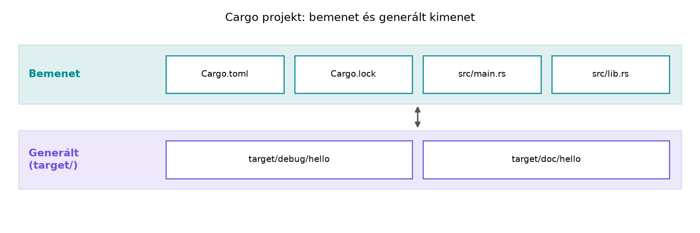

Egy C++-projektben a buildrendszer, a függőségkezelés, a formázás és
a statikus elemzés általában külön eszközökből áll össze: CMake vagy
Make, vcpkg vagy Conan, clang-format, clang-tidy vagy cppcheck, és
gyakran még egy CI-szkript, amely ezeket összefogja. A Rust ezt a négy
területet egyetlen eszközláncba, a Cargo köré szervezi: a
rustup a fordítót és a kiegészítőket telepíti, a
cargo buildel, tesztel, függőséget tölt le és dokumentációt
generál, a rustfmt formáz, a clippy pedig a
nyelv saját statikus elemzője. Ez a fejezet ezt a munkafolyamatot
alapozza meg; a későbbi rkv-laborok mind ezekre a parancsokra
épülnek.
Definíció. A rustup a Rust
toolchaineket kezelő eszköz. Egy toolchain a Rust fordítóból
(rustc), a csomagkezelőből (cargo), a standard
könyvtárból és választható komponensekből áll. A három fő csatorna:
Szabály. A könyv projektjei a
stable toolchaint használják; nightly-only funkciót
csak akkor említünk, ha azt külön jelöljük, és soha nem építünk rá éles
kódot. Kivétel a Miri, amely csak nightly toolchainnel fut; ezt mindig
cargo +nightly miri ... formában, a projekt toolchainjétől
elkülönítve hívjuk.
A könyv rögzített tanulási környezete. A „stable” mozgó cél: hathetente új kiadás jön. Hogy a laborok tiszta könyvtárból is ugyanúgy álljanak elő, a könyv a következőket rögzíti:
| Elem | Rögzített érték |
|---|---|
| toolchain | Rust 1.99.1 (stable), rustfmt és
clippy komponenssel, a
~/rust-labor/rust-toolchain.toml szerint (a
labor-gyökérben, így az rkv és az összes testvér-labor örökli) |
| edition | 2024 minden crate-ben; a könyv nem vált vissza 2021-re |
| minimális Rust-verzió | rust-version = "1.89" (a 2024-es edition már az
1.85-től támogatott; az 1.89 azért a minimum, mert az I/O és szerializáció: fájlok, pufferelés, serde
FileStore-ja a File::try_lock-ot
használja) |
| függőségfeloldó | resolver = "3" a workspace gyökerében (a 2024-es
edition alapértelmezése) |
| lockfájl | egyetlen közös Cargo.lock a workspace gyökerében,
verziókezelés alatt |
| operációs rendszer | Linux x86-64 (a laborokat Ubuntu 24.04-en, bash alatt írtuk), C/C++
fordító: GCC 13 vagy Clang 18. A CMake-es build-integráció (C++-együttműködés a cxx crate-tel és a fokozatos
migráció) opcionális, nem ellenőrzött kitekintés:
CMake 3.28+ és Corrosion 0.6.1 kell hozzá, de a könyv ellenőrzött
útvonala a kézi cargo build + g++ |
macOS-en és Windows/WSL2 alatt a Rust-laborok változtatás nélkül
működnek; a C/C++ együttműködés (FFI, cxx) és a Linux-specifikus részek
(például a könyvtár-fsync) ott eltérhetnek, ezeket a könyv
nem támogatja külön.
A rust-toolchain.toml a
~/rust-labor/ labor-gyökérbe kerül (nem az
rkv workspace-be): a rustup a munkakönyvtártól felfelé
keresi, ezért az rkv/, a hello/ és az összes
rNNN/ testvérkönyvtár ugyanazt a toolchaint kapja. Ha ilyen
fájlt talál, a benne megadott toolchaint használja (és ha hiányzik,
telepíti). A már meglévő felülbírálásokat ellenőrizd:
rustup override list (könyvtárankénti
rustup override set), valamint a
RUSTUP_TOOLCHAIN környezeti változó és a parancssori
cargo +<toolchain> felülírja a fájlt. A tényleges
toolchaint a rustc --version mutatja a
projektkönyvtárban.
[toolchain]
channel = "1.99.1"
components = ["rustfmt", "clippy"]
profile = "minimal"Egy újabb stable toolchain is szinte mindig lefordítja a könyv
kódját, de a lintüzenetek és a hibaszövegek eltérhetnek. Ha a
rögzítettnél újabb toolchainnel dolgozol, a channel értékét
tudatosan írd át.
A rustup komponenseket is kezel: rustfmt
(formázó), clippy (linter), rust-docs (helyi
dokumentáció), rust-analyzer (nyelvi szerver). A
rustup component add <név> paranccsal
telepíthetők.
Definíció. A Cargo a Rust
buildrendszere és csomagkezelője. Egy Cargo-projekt lelkét a
Cargo.toml manifest adja, amely a csomag nevét, verzióját,
editionjét és függőségeit tartalmazza. A Cargo.lock a
feloldott függőségi gráf pontos verzióit rögzíti. A Cargo FAQ jelenlegi
ajánlása szerint minden projekt lockfájlját érdemes
verziókezelésbe tenni (a cargo new sem teszi már a
.gitignore-ba), mert így a saját fejlesztői és CI-build
reprodukálható; a lockfájl azonban csak a saját buildet
rögzíti: egy közzétett könyvtár Cargo.lock-ját a fogyasztó
nem veszi figyelembe, ő a saját gráfját oldja fel.
A Cargo alapvető parancsai:
cargo new <név> – új projekt létrehozása;cargo build – debug profilú fordítás, alapértelmezés
szerint a target/debug/ könyvtárba;cargo build --release – optimalizált release fordítás a
target/release/ könyvtárba;cargo run – build, majd futtatás;cargo test – tesztfordítás és tesztek futtatása;cargo check – csak típusellenőrzés, kódgenerálás
nélkül; gyorsabb, mint a teljes build;cargo fmt – a rustfmt futtatása a
projektre;cargo clippy – a clippy linter
futtatása;cargo doc --open – dokumentáció generálása és
megnyitása böngészőben.Szabály. A target/ könyvtár mindig
generált, nem kerül verziókezelésbe. A cargo clean törli, a
cargo build újra létrehozza.
A debug profil gyors fordításra optimalizál, cserébe
lassabb futást ad; a release profil lassabb fordításért
cserébe agresszív optimalizációt (opt-level = 3) és
kevesebb futásidejű ellenőrzést kapcsol be. A profilok a
Cargo.toml [profile.*] szekcióiban
hangolhatók, de az alapértelmezések a legtöbb projekthez megfelelők.
A C++-világban a buildrendszer és a csomagkezelő szét van választva; a Rustban a Cargo mindkettőt egyszerre végzi. Tekintsünk egy minimális C++ programot és annak CMake-buildjét, majd a Rust-megfelelőt.
// main.cpp
#include <iostream>
int main() {
std::cout << "Hello, C++!\n";
}
// CMakeLists.txt
cmake_minimum_required(VERSION 3.16)
project(hello_cpp)
add_executable(hello_cpp main.cpp)// src/main.rs
fn main() {
println!("Hello, Rust!");
}# Cargo.toml
[package]
name = "hello_rust"
version = "0.1.0"
edition = "2024"
[dependencies]A különbség nem csak szintaktikai. A CMake egy általános célú
buildgenerátor, amely mögött Make, Ninja vagy Visual Studio áll; a Cargo
közvetlenül hívja a rustc-t, és maga gondoskodik a
függőségek letöltéséről, verziózásáról és a fordítási sorrendről. A
vcpkg/Conan rendszerekben a függőségek gyakran rendszerszintű vagy
félglobális könyvtárakba kerülnek; a Cargo a függőségeket a
~/.cargo/registry/ gyorsítótárba tölti, és projektenként, a
Cargo.lock alapján reprodukálhatóan építi be őket.
A minőségi eszközök is szorosabban integráltak. A C++-ban a
clang-format és a clang-tidy külön parancsok,
gyakran egyedi konfigurációval; a Rustban a cargo fmt és a
cargo clippy a manifestben vagy külön konfigurációs
fájlokban állítható, de működésük alapértelmezésben is konzisztens. A
rustdoc a Doxygenhez hasonló szerepet tölt be, de a
dokumentációs kommentek (///) a nyelv szintjén kapcsolódnak
a kódhoz, és a generált HTML-be a dokumentációs tesztpéldák is
bekerülnek.
Munkakönyvtár: ~/rust-labor/r002/
Kódblokk-jelölések. A könyv laborjaiban minden olyan kódblokk előtt, amelyet fájlba kell írni, egy Kódblokk sor áll. Ez megadja a fájl workspace-hez (vagy a labor munkakönyvtárához) viszonyított útját, a műveletet és az ellenőrzést. A műveletek:
~/rust-labor/rNNN/ alatt egy friss cargo new
projektben próbálható ki;E0382) nem fordul le, vagy a megnevezett
figyelmeztetést adja; a javított változat külön blokkban
következik.A Kódblokk sor nélküli rövid kódrészletek a magyarázat illusztrációi, nem kell őket fájlba írni. Minden rkv-labor végén egy Ellenőrzési pont rögzíti a projekt elvárt állapotát és az azt igazoló parancsot; a következő labor ebből az állapotból indul.
A labor célja: telepíteni a stable toolchaint, létrehozni egy
Cargo-projektet, lefuttatni a buildet, a teszteket, a formázót és a
lintert, majd megnézni a generált dokumentációt. A labor kimenete egy
hello nevű bináris crate lesz, amelyet később a Modulok és láthatóság: header nélküli világ
alfejezetben könyvtári modullá bővítünk.
Linuxon a hivatalos telepítő:
curl --proto '=https' --tlsv1.2 -sSf https://sh.rustup.rs | shA telepítő a ~/.cargo/bin/ könyvtárba helyezi a
binárisokat, és a ~/.cargo/env fájlban elérhető környezeti
beállítást hoz létre. Új terminálablakban vagy a
source ~/.cargo/env kiadása után ellenőrizzük:
rustup --version
rustc --version
cargo --versionA rustup show megjeleníti az aktív toolchaint és a
telepített komponenseket. Ha a stable toolchain még nincs telepítve:
rustup default stable
rustup component add rustfmt clippy rust-docsA rustup component list --installed paranccsal
ellenőrizhetjük, hogy minden komponens megvan-e. A pontos verziószámok a
kiadástól függnek, ezért a kimenetet itt nem tüntetjük fel.
mkdir -p ~/rust-labor/r002
cd ~/rust-labor/r002
cargo new hello
cd helloA cargo new létrehozza a következő struktúrát:
hello/
|-- Cargo.toml
`-- src
`-- main.rsA generált Cargo.toml tartalma:
Kódblokk — fájl: hello/Cargo.toml · művelet: a
cargo new generálta, nem kell szerkeszteni
[package]
name = "hello"
version = "0.1.0"
edition = "2024"
[dependencies]Az edition a nyelvi kiadást jelöli; a 2024-es editiont a
Rust 1.85-től támogatja, a rögzített 1.99.1-es toolchain
cargo new parancsa ezt írja be. Régebbi toolchain a 2021-es
editiont generálná; a könyv ezt nem támogatja, ezért ilyenkor a
toolchaint kell frissíteni, nem az editiont visszaállítani. Az edition
nem a toolchain verziója, hanem a nyelvi kompatibilitási szint; erről
később, a Függőségek, feature-ök, verziózás és
workspace-ek alfejezetben lesz részletesebben szó.
A generált src/main.rs:
Kódblokk — fájl: hello/src/main.rs · művelet: a
cargo new generálta, nem kell szerkeszteni
fn main() {
println!("Hello, world!");
}cargo buildA parancs lefordítja a programot, és létrehozza a
target/debug/hello binárist. A cargo run
újrafordít, ha szükséges, majd futtat:
cargo runVárt kimenet:
Finished `dev` profile [unoptimized + debuginfo] target(s) in 0.02s
Running `target/debug/hello`
Hello, world!A cargo check csak a típushelyességet ellenőrzi, nem
generál futtatható kódot; ezért gyorsabb, és akkor hasznos, ha csak a
fordítási hibákat akarjuk látni:
cargo checkA teszteléshez adjunk egy egyszerű tesztet a
src/main.rs-hez, vagy hozzunk létre egy
src/lib.rs-t. Tiszta bináris crate-ben a tesztet a
main.rs aljára tehetjük, de idiomatikusabb a könyvtári
részt különválasztani. Készítsünk egy src/lib.rs fájlt:
Kódblokk — fájl: hello/src/lib.rs · művelet: új
fájl · ellenőrzés: cargo test → 1 sikeres teszt
/// Visszaad egy üdvözlő üzenetet a megadott névvel.
pub fn greet(name: &str) -> String {
format!("Hello, {name}!")
}
#[cfg(test)]
mod tests {
use super::greet;
#[test]
fn greet_matches() {
assert_eq!(greet("Rust"), "Hello, Rust!");
}
}Most a cargo test lefuttatja a tesztet:
cargo testVárt kimenet (lerövidítve):
running 1 test
test tests::greet_matches ... ok
test result: ok. 1 passed; 0 failed; 0 ignored; 0 measured; 0 filtered outA hello crate így már bináris és könyvtári célpontot is
tartalmaz. A Cargo.toml automatikusan érzékeli a
src/lib.rs jelenlétét; ezt a Structok
és metódusok alfejezetben fogjuk kihasználni.
A formázó futtatása:
cargo fmtEz átalakítja az összes .rs fájlt a hivatalos stílus
szerint. Ellenőrzésre a cargo fmt -- --check parancs
szolgál, amely hibával tér vissza, ha a kód nincs formázva.
A clippy futtatása:
cargo clippyA clippy statikus elemzést végez, és idiomatikusabb, gyorsabb vagy
biztonságosabb kódot javasol. Példaként szándékosan írjunk rosszabbul
olvasható kódot a src/lib.rs-be:
Kódblokk — fájl: hello/src/lib.rs · művelet:
beillesztés a fájl végére · szándékosan rossz stílusú,
de lefordul · ellenőrzés: cargo clippy →
needless_return és needless_bool
figyelmeztetés
pub fn is_positive(n: i32) -> bool {
if n > 0 {
return true;
} else {
return false;
}
}Ez a változat lefordul, a cargo build nem jelez semmit;
a clippy viszont két lintet is jelez: a needless_return
szerint a return true; és a return false;
felesleges, a needless_bool szerint pedig az egész
if–else, amely csak bool literált
ad vissza, az n > 0 feltétellel helyettesíthető. A
cargo clippy kimenetének eleje (Rust 1.99.1)
kivonat: a is_positive függvényt egy
önálló, üres src/lib.rs-be helyezve a sorok 2–3-ra esnek; a
labor lib.rs-ének végére illesztve a sorszámok a fájl
hosszával eltolódnak, a diagnózis tartalma és a lintnevek viszont
ugyanazok.
warning: unneeded `return` statement
--> src/lib.rs:3:9
|
3 | return true;
| ^^^^^^^^^^^
|
= note: `#[warn(clippy::needless_return)]` on by default
...
warning: this if-then-else expression returns a bool literal
--> src/lib.rs:2:5
|
= note: `#[warn(clippy::needless_bool)]` on by defaultAz alapértelmezett cargo clippy a figyelmeztetésekkel is
0-s kilépési kóddal tér vissza: a warning nem
sikertelen futás. A -D warnings ezen változtat: a
cargo clippy -- -D warnings a clippy és a rustc minden
figyelmeztetését hibává emeli, ezért erre a kódra három hibával
(needless_return kétszer, needless_bool
egyszer) és 101-es kilépési kóddal áll meg. Ezt használjuk CI-ban
kapuként.
A javítás:
Kódblokk — fájl: hello/src/lib.rs · művelet: az
előző is_positive cseréje · ellenőrzés:
cargo clippy → nincs figyelmeztetés
pub fn is_positive(n: i32) -> bool {
n > 0
}Futtassuk újra a cargo clippy-t, és ellenőrizzük, hogy
nincs több figyelmeztetés. Ha a clippy-figyelmeztetéseket hibává akarjuk
alakítani (például CI-ban), használhatjuk a -D warnings
kapcsolót:
cargo clippy -- -D warningsEz minden clippy-warningot fordítási hibává alakít. A munkafolyamatban ez hasznos, mert a figyelmeztetések nem maradnak észrevétlenek.
A cargo doc a /// dokumentációs
kommentekből HTML-dokumentációt generál a target/doc/
könyvtárba. A --open kapcsoló megnyitja a böngészőben, de a
laborban csak a generálást futtatjuk:
cargo docA generált oldal a target/doc/hello/index.html fájlban
érhető el. A dokumentációs kommentekben lévő kódpéldák automatikusan
tesztelődnek a cargo test során: a ///
kommentben elhelyezett kódblokkok dokumentációs tesztként (doctest)
futnak le. A greet dokumentációjában még nincs kódpélda,
ezért a cargo test --doc most nulla doctestet talál:
Doc-tests hello
running 0 testsAdjunk a greet dokumentációjához egy példát. A doctest
külön crate-ként fordul, ezért a függvényre a crate nevével
(hello::greet) hivatkozunk:
Kódblokk — fájl: hello/src/lib.rs · művelet: a
greet feletti /// komment cseréje ·
ellenőrzés: cargo test --doc → 1 sikeres doctest
/// Visszaad egy üdvözlő üzenetet a megadott névvel.
///
/// # Példa
///
/// ```
/// assert_eq!(hello::greet("Rust"), "Hello, Rust!");
/// ```
pub fn greet(name: &str) -> String {
format!("Hello, {name}!")
}A cargo test --doc kimenete most (a sorszám a kódblokk
nyitó sorára utal a fájlban):
Doc-tests hello
running 1 test
test src/lib.rs - greet (line 5) ... okA rust-analyzer egy nyelvi szerver, amely a szerkesztőbe
integrálva valós idejű kódkiegészítést, hibajelzést és navigációt
biztosít. Telepítése toolchain-komponensként lehetséges:
rustup component add rust-analyzerA pontos IDE-integráció (VS Code, CLion, Neovim) a szerkesztőtől
függ; a rust-analyzer a Cargo manifestjét és a
target/ könyvtár metaadatait használja a pontos
elemzéshez.
Ellenőrzési pont. A
~/rust-labor/r002/hello crate-ben van
src/main.rs és src/lib.rs (greet,
is_positive); a cargo test 1 sikeres unit
tesztet és 1 sikeres doctestet futtat, a cargo fmt --check
és a cargo clippy -- -D warnings hiba nélkül fut le.
Az alábbi rétegábra a projekt fizikai szerkezetét mutatja.

A Cargo.toml a projekt deklaratív leírása: mi a csomag
neve, milyen függőségei vannak, milyen buildprofilokat használ. A
Cargo.lock a feloldott függőségi fa pontos verzióit
tartalmazza; binárisok esetén commitoljuk, hogy a build reprodukálható
legyen. A target/ mindig generált.
A target/ könyvtár verziókezelése.
C++-projekteknél a build könyvtár (pl. build/) gyakran a
repo része vagy a .gitignore-ban szerepel; Rustban a
target/ soha nem kerül be a verziókezelésbe. Ha véletlenül
mégis, a .gitignore-hoz adjuk hozzá.
A cargo run mindig debug módban
fut. A release módú futtatáshoz
cargo run --release szükséges. A C++-ban a build típusát a
CMake CMAKE_BUILD_TYPE változója szabályozza; Rustban a
--release kapcsoló a Cargo parancs része, nem a
manifesté.
A Cargo.lock szerepének
félreértése. A régebbi tanács szerint könyvtáraknál a lockfájlt
nem commitoljuk; a Cargo FAQ azóta azt javasolja, hogy a lockfájl legyen
verziókezelés alatt minden projektben. Fontos különbség: a repositoryban
tárolt lockfájl a saját build és CI reprodukálhatóságát
szolgálja, a könyvtárat függőségként használó crate feloldását viszont
nem befolyásolja, hiszen a fogyasztó a saját gráfját oldja fel. Az rkv
teljes workspace-e egyetlen, a gyökérben lévő Cargo.lock-ot
használ.
A clippy figyelmeztetések figyelmen kívül
hagyása. A C++-ban a clang-tidy gyakran túl zajos,
ezért sokan kikapcsolják; a Rust clippy azonban a nyelv idiomatikus
használatát tanítja, és a figyelmeztetések gyakran valós tervezési
hibákra utalnak. A -D warnings használata a CI-ban jó
gyakorlat.
Mi a különbség a Cargo.toml és a Cargo.lock
között? Melyiket commitoljuk bináris, és melyiket könyvtár crate esetén,
és miért?
Adott egy C++-projekt, amely a következő elemekből áll:
main.cpp, CMakeLists.txt, egy
format.sh szkript (clang-format -i), és egy
lint.sh (clang-tidy). Írd le, milyen
Cargo-parancsokkal váltanád ki ezeket a Rustban.
Hozz létre egy új Cargo-projektet counter néven a
~/rust-labor/r002/counter/ könyvtárban. A program
tartalmazzon egy src/lib.rs fájlt egy
increment függvénnyel, amely egy i32 értékét
eggyel növeli, és egy tesztet, amely ellenőrzi a működését. Futtasd a
cargo test és a cargo clippy parancsokat.
A laborban létrehozott hello projekt
src/lib.rs-ében szándékosan hagyj clippy-figyelmeztetést
(például if n > 0 { true } else { false }). Futtasd a
cargo clippy parancsot, olvasd el a figyelmeztetést,
javítsd a kódot, majd ellenőrizd, hogy a
cargo clippy -- -D warnings már hibamentesen fut le.
A Cargo.toml a manifest: a projekt neve, verziója,
editionje és a függőségek leírása. A Cargo.lock a feloldott
függőségi gráf pontos verzióit és ellenőrzőösszegeit tartalmazza. A
Cargo FAQ jelenlegi ajánlása szerint minden projektnél, így
könyvtáraknál is érdemes verziókezelés alá tenni, mert a saját build és
a CI reprodukálható lesz tőle. A lockfájl azonban nem utazik a
függőséggel: egy közzétett könyvtár lockfájlját a fogyasztó figyelmen
kívül hagyja, és a saját gráfját oldja fel, ezért a könyvtár lockfájlja
a fogyasztók buildjét nem befolyásolja.
CMakeLists.txt + make →
Cargo.toml + cargo buildformat.sh → cargo fmtlint.sh → cargo clippycargo testcargo doc --openmkdir -p ~/rust-labor/r002
cd ~/rust-labor/r002
cargo new counter --lib # létrehozza a ~/rust-labor/r002/counter/ könyvtárat
cd counterA cargo new counter --lib a
~/rust-labor/r002/counter/Cargo.toml-t és a
src/lib.rs vázat hozza létre (a feladatban kijelölt
könyvtárban, nem egy beágyazott counter/counter alatt). A
src/lib.rs tartalma:
/// Eggyel növeli a kapott számot.
pub fn increment(n: i32) -> i32 {
n + 1
}
#[cfg(test)]
mod tests {
use super::increment;
#[test]
fn increments() {
assert_eq!(increment(41), 42);
}
}Futtatás:
cargo test
cargo clippyA cargo test lefuttatja a tesztet, a
cargo clippy pedig nem ad figyelmeztetést.
A src/lib.rs rossz változata:
pub fn is_even(n: i32) -> bool {
if n % 2 == 0 {
true
} else {
false
}
}A cargo clippy figyelmeztet:
clippy::needless_bool – a if kifejezés helyett
közvetlenül a feltétel használandó. Javított változat:
pub fn is_even(n: i32) -> bool {
n % 2 == 0
}Futtatás ellenőrzéshez:
cargo clippy -- -D warningsNem érkezik hiba, a kód idiomatikus.
Ez az alfejezet bemutatta a Rust eszközlánc alapjait. A
rustup a toolchaineket és komponenseket kezeli; a
Cargo a buildrendszer, csomagkezelő, tesztfuttató és
dokumentációgeneráló. Megtanultuk a cargo new,
build, run, test,
check, fmt, clippy és
doc parancsokat, valamint a Cargo.toml és
Cargo.lock szerepét. A debug és release profilok a
target/debug/ és target/release/ könyvtárakba
építenek. A rustfmt a formázást, a
clippy a statikus elemzést végzi; a
rustdoc a /// kommentekből generál
dokumentációt, és a kódpéldák automatikusan tesztelődnek. A
Továbbvitt eredmény: ez a Cargo-munkafolyamat az alapja
az rkv mintaprojekt indítása: Cargo-workspace és
első CLI alfejezetnek, ahol az rkv workspace-t hozzuk létre, a Modulok és láthatóság: header nélküli világ
alfejezetnek, ahol a modulokat szervezzük, és az Unit-, integrációs és dokumentációs tesztek
alfejezetnek, ahol a tesztelést mélyítjük el.
rust-toolchain.toml):
https://rust-lang.github.io/rustup/overrides.htmledition,
rust-version), a workspace és a függőségfeloldó
(resolver):
https://doc.rust-lang.org/cargo/reference/manifest.html,
https://doc.rust-lang.org/cargo/reference/resolver.htmlA parancsok és a kimenetek a rögzített Rust 1.99.1 toolchainre
vonatkoznak (ellenőrizve: 2026. október). Más toolchainnél a
verziószámok és a lintüzenetek szövege eltérhet; a
rustup show és a cargo --version mutatja,
melyik toolchain aktív.